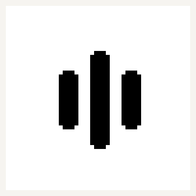

Use push-to-talk dictation in editors, browsers, chat apps, mail, and developer tools.
Qwen3-ASR runs on your Mac. Audio is not sent to a cloud API by the default engine.
Register names and specialist terms so Qwen can bias recognition at commit time.
Three focused ASR modes
Qwen streaming is the default. Qwen Original keeps the model's rolling output closer to its native behavior. Nemotron MLX is available for fast local experiments on Apple Silicon.
The dashboard stays intentionally small: Qwen streaming, Qwen Original, and Nemotron.

Developer install
The current build is a developer MVP for macOS. Install from source, grant Microphone and Accessibility permissions, then run the menu-bar app.
Built for daily typing
Right Ctrl works as a hold key, Right Option works as a toggle, and the HUD keeps the current listening state visible without taking over your screen.